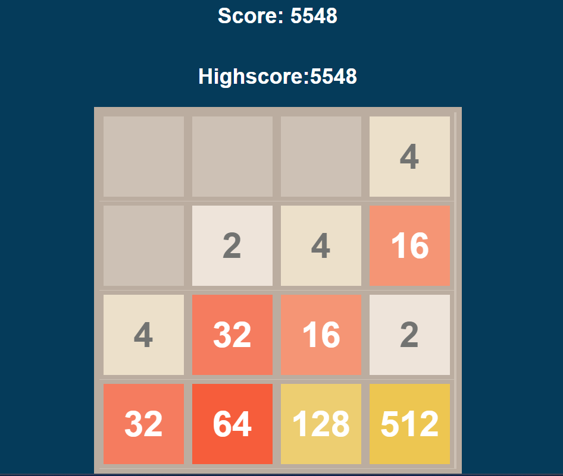

Strategi
Trikset er å velge et hjørne. Her skal du prøve å ha ruten med størst verdi til en vher tid. Videre er målet å fylle resten av raden med høye verdier. Dette gjøres til du kan slå de sammen med den i hjørnet.
Trikset er å velge et hjørne. Her skal du prøve å ha ruten med størst verdi til en vher tid. Videre er målet å fylle resten av raden med høye verdier. Dette gjøres til du kan slå de sammen med den i hjørnet.